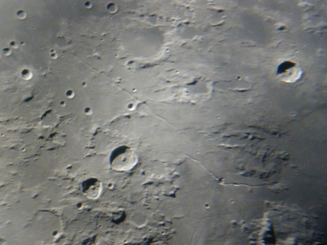

I don't know how many times I've heard people talk about the Moon being too bright to look at through a telescope. I've even heard people worry about whether it could damage your eyes!
Bunk, of course.
|  |
The sense of history just reeked. When you walk in the door, practically the first thing you see, neglected by the staircase to the observing floor, is an old locker with names like Hubble, Zwicky, Minkowsky and Babcock on it.
Inside Hubble's locker, you'll find some mosquito repellent - probably not from their era, but handy all the same. The bloodletting was not horrible, but skin slapping was the order of the early evening.
We were there by the graces of the Los Angeles Astronomical Association, who arranged this pleasure cruise for over 20 other amateurs. I'm not sure there is any other organization around crazy enough to have a Mooning night on a 60-inch telescope, and for this opportunity I will always be grateful.
Is 60 inches too much for mooning? No way. In fact, the seeing was so good we could probably have enjoyed steady images in the 100-inch! But we'll get to that.
The first thing the well-travelled telescope tourist will note is the ratty tin-shed construction (true also of the hundred inch) and general disrepair.
This is striking when compared to the nineteenth-century elegance of Lick or the stark, modern look of Mauna Kea. But inside, everything works like a charm, and when you get to the scopes themselves, the care and respect lavished on them shows.
They may be old and worn, but they are still great.
Opening the dome of the 60-inch makes the whole building chatter, but turning it is smooth as silk. The scope drives are quiet, fast and clean.
The scope itself is a 60-inch fork-mounted cassegrain reflector. Focus is out the side via a tertiary system that's somewhat unique: the eyepiece/focuser do not point straight out the side, but rather are canted slightly toward the rear of the scope.
Clearly, the tertiary is not set at 90 degrees, but a bit more. Not even the historian present knew why this was done originally, but it works fine at f/alot.
The balance point is surprisingly near the rear of the scope because of the full thickness mirror. This makes for short forks and a very steady mounting.
A cool feature is an electrically adjustable secondary that allows easy focal length adjustment to accommodate any range of eyepiece or instrument.
Okay, it can be a bit uncomfortable to look at a bright Moon through a telescope - of any size. But not so well known is why: it's because you're usually somewhat dark adapted, then look into the eyepiece with a dilated pupil
We avoided this problem entirely by leaving the lights on in the dome. The Moon is plenty bright, and not one person there suffered even the slightest discomfort , even through 60-inches of scope, wide open. Plus, you could read and write notes while others observed. It was great!
If there were more "pure" lunar sessions, the same technique could make it quite comfortable for everyone present.
Generally, magnifications ran between 250 and 425x, approximately - about the same range usually used in smaller amateur scopes. Though the seeing was quite good, it was still the limit. And any unsteadiness is greatly magnified in larger apertures, so you can get some feel for how wonderful the night was.
How was it?
Amazing! Seeing was clearly subarcsecond and this was one hot mirror.
The first target was the area surrounding Autolycus - Archimedes was not yet lit, but Hadley-Bradley rilles were very sharp. Hyginus and Triesnecker were visible (easily) at the edge of the field.
But that wasn't what caught my eye. It turns out Autolycus has an astoundingly rich field of secondaries, which I do not remember noticing before. This was a phenomenal view! Not only could you see countless little marks where they hit, you could see the varying shapes of the secondaries! Some had clearly hit obliquely, creating short trenches. Others were compound, where more than one boulder hit, or split on impact.
So, of course, the next target was Hyginus. How many craterlets can you count in the western side of Hyginus? And *all* of Triesnecker was easy.
Next up was the Alpine Valley with about half the aperture aimed at the dome as the Moon sank away. The rille was somewhat visible in places, but unremarkable. Nice view of Rima Burt. But the lunar part of the evening was clearly drawing closed by 10:30.
We went on to observe quite a few remarkable deep sky objects; more about that somewhere else.
But I learned a couple of interesting lessons.
First, 60 inches is not quite enough to really see what's up on the Moon when you get good seeing - the 100-inch across the way was very tempting.
Second, more big observatories should have Moon nights!